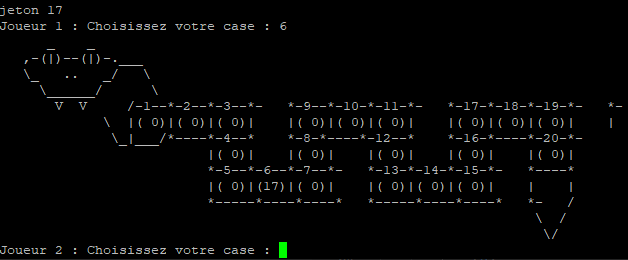

Nous avons eu comme projet la réalisation d'un jeu simple avec la génération d'un plateau de jeu.
j’ai pour ma part refait complètement cette SAE, étant donnez que je n’était pas satisfait du résultat, j’ai refait toute l’interface du serpent, le programme de gestion des pion, de pioche, d’optimisation tout le fonctionnement du programme.
Cela ma permit d'approfondir mes competence de programmation et de comprendre mieux le déroulement de cette SAE.

Dans cette SAE etait lié au sujet de la 201 il nous à fallu créer une application pour pouvoir géré les fluide en fournissent un programme optmisé.
J'ai réalisé pour ma pars tout un tas de programme comme Cuve, Structure ou bien l'IHM d'application 2.
J'ai personellement jamais utilisé de schéma de raisonnement durent mes SAE, c'est donc pas acquis
Pour pouvoir vérifier l'efficacité des mes programme, j'utilise des SOP pour savoir le bon fonctionnement de mon programme